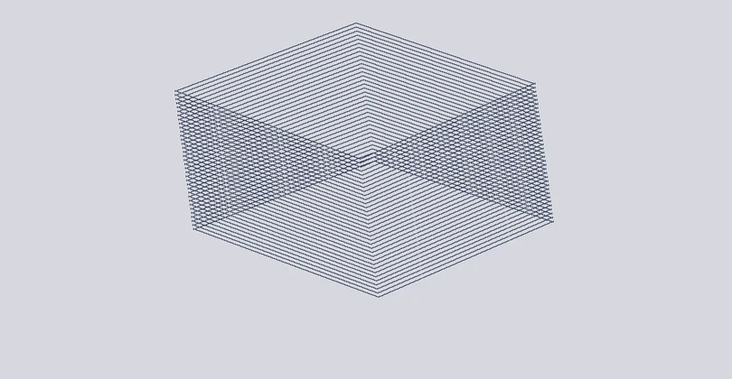
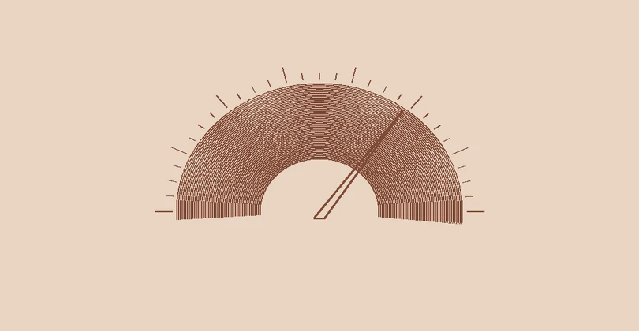
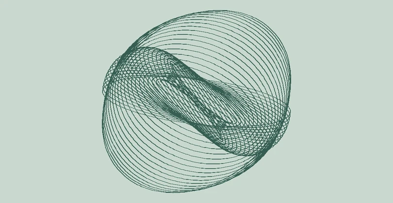

Project index

Research & concepts
 Signal interference
Signal interference
Pulse Study
Could tiny changes in facial colour help an analyst assess the authenticity of a video?

Layered passagesPassage Index
A retrieval experiment tracing an answer back to a particular passage and edition.

Graduated dialMeter Book
A billing concept for explaining which usage events contributed to an invoice.

Intersecting orbitsHandoff
A proposed agent workflow for reviewing a draft, changing its scope and resuming it.
 Parallel traces
Parallel traces
Trace Reader
A local trace viewer concept for investigating slow requests and missing spans.